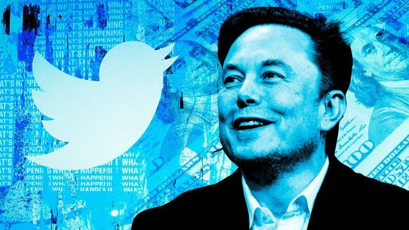

Apr 24
why does Elon musk want twitter?

Elon musk’s today most investments are sensitive to the stock market not to say that they are entirely fuelled and leveraged by this same financial market without highlighting the fact that the founder of the CEO of Tesla is very interested in cryptocurrencies that we all know how volatile they can be. As Elon musk’s actual investment and future are very strongly connected to the financial markets actually betting on his future success with Tesla and SpaceX and others, any changes that could happen in this financial market will come with the risk of impacting Elon musk's set of publicly funded companies. This financial market exposure is there for all publicly traded companies but Elon musk’s companies are more financially leveraged than their peers in the tech industry because most of the volume of funds that are directed in musk's ventures are for future expected revenues that the participants of the financial markets are expecting to see in the long term as they are not actually realized.
Elon has shown that he is willing to shift from regular currencies like the dollar to cryptos like dogecoin, maybe because he doesn't trust actual governments and regulators of the actual banking system but what is sure is that if this choice is entirely executed Elon musk’s ventures will be more sensitive to opinions of the financial market’s participants and to the opinions of people like you and me who have direct access to the crypto-financial system, unlike the stock markets and the investment banking system where we have layers of intermediate actors between people and these systems. The resulting effect of this shift from regular currency to crypto will increase the financial exposure of Elon musk’s companies but the most important actor will end up being not large investment firms and banks but people like you and me who day by day use social media and invest in crypto.
Given these two considerations, Elon musk’s ventures will have stronger exposure to markets sentiment and markets as we have seen in recent events like the GameStop squeeze and years ago with the flash crash of may 16 can dramatically change in a manner of seconds or days because of the action of one big market participants or a group of individual traders. This sensibility of markets to participants' opinions is aggravated by social media which provides people a medium for sharing information faster and worldwide and allows them to take collective and synchronized actions, actions that could be about politics but also about making a stock prices change like what we have seen with the group of individual traders who made the stock price of GameStop increase from $100 to 400. Then Elon musk could not stay blind to the power that social media platforms like Twitter because of the financial exposure that his set of companies has which makes it obvious that his investments will be safer if he has something to say in one of such powerful social media that could shape people opinions about the value of a company. To protect the billions of dollars that are infused into Tesla, SpaceX, and the coming ventures that he will be engaging himself in. Elon musk must screen social media like Twitter or own a social media that is as powerful as Twitter. The simplest strategy for achieving this screen protection is actually to acquire Twitter rather than finding and funding a young social media startup that could in the near future have this same power of shaking financial markets.
Elon has not considered Facebook (maybe so expensive to buy) or clubhouse because among these social media platforms Twitter is the one that has more impact on finance and politics (at least in developed countries like US and European countries). This last statement is a personal opinion that one could contest but a careful analysis of data about social media and the impact that they had on Gamestop squeeze could clearly show that after Reddit, Twitter had huge participation in spreading the information about this investment hack. Another element that could show that Twitter has more impact on financial markets than other social media platforms is the segment of users on this social media platform who mostly are older than the average user of Facebook and are more sensitive to political news and opinions. We can add to this last element that Twitter users are more financially wealthy than other social media users making them more able to participate in social investment movements. then holding a social media like Twitter in his portfolio of companies is for Elon muck a safeguard again social protests about stock investing that could hurt his flow of investments.
These are factual elements about the importance for Elon musk to own an opinion-shaping social media platform like Twitter but you could also consider other benefits like the mediatic exposure that Elon and his child companies could get from such acquisition. We all know that it is not new for an entrepreneur to invest in a media company if we agree that social media platforms are also media companies even if they are not producing news but participating in their spreading and discoverability.
If Elon musk was given the choice to acquire either Facebook or Twitter strategically he could still be willing to buy Twitter rather than Facebook to show that this is not about owning a successful social media but owning one that has the properties that have been exposed in subsequent paragraphs.
if the acquisition of Twitter is rejected, we could expect Elon to look for the next social media platform that will have such kind of properties of shaping people's opinions and impacting financial markets. Then this interest in Twitter is a goto signal for all entrepreneurs willing to do business on social media if they can build and scale fastly a social media that is very impacting financial markets and the crypto space. if it’s such a case then you have a chance to sell this social media startup to Elon musk.